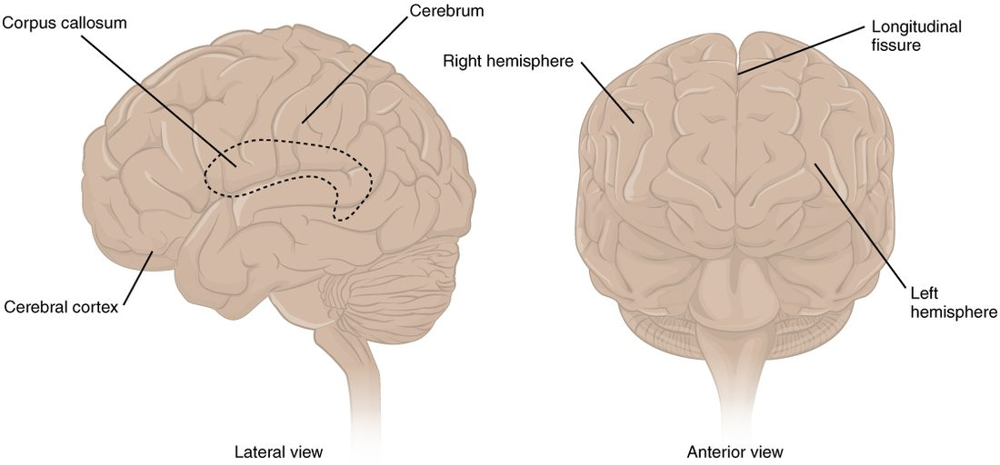
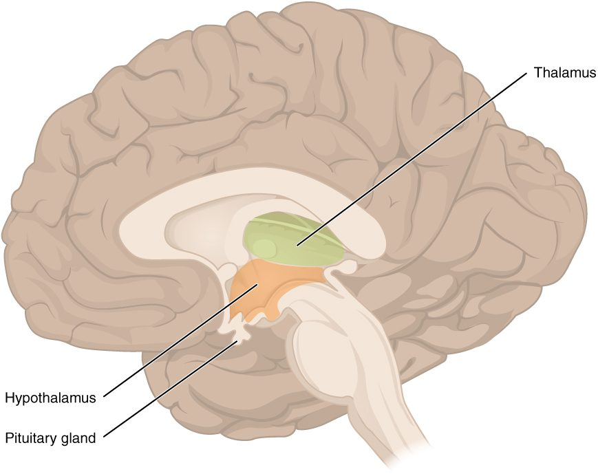
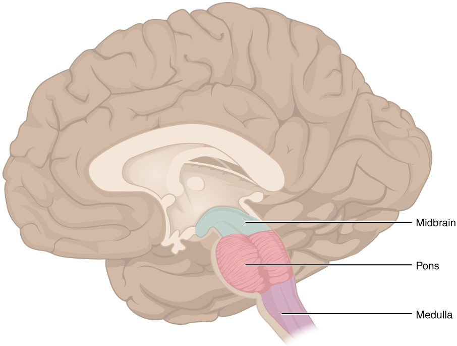
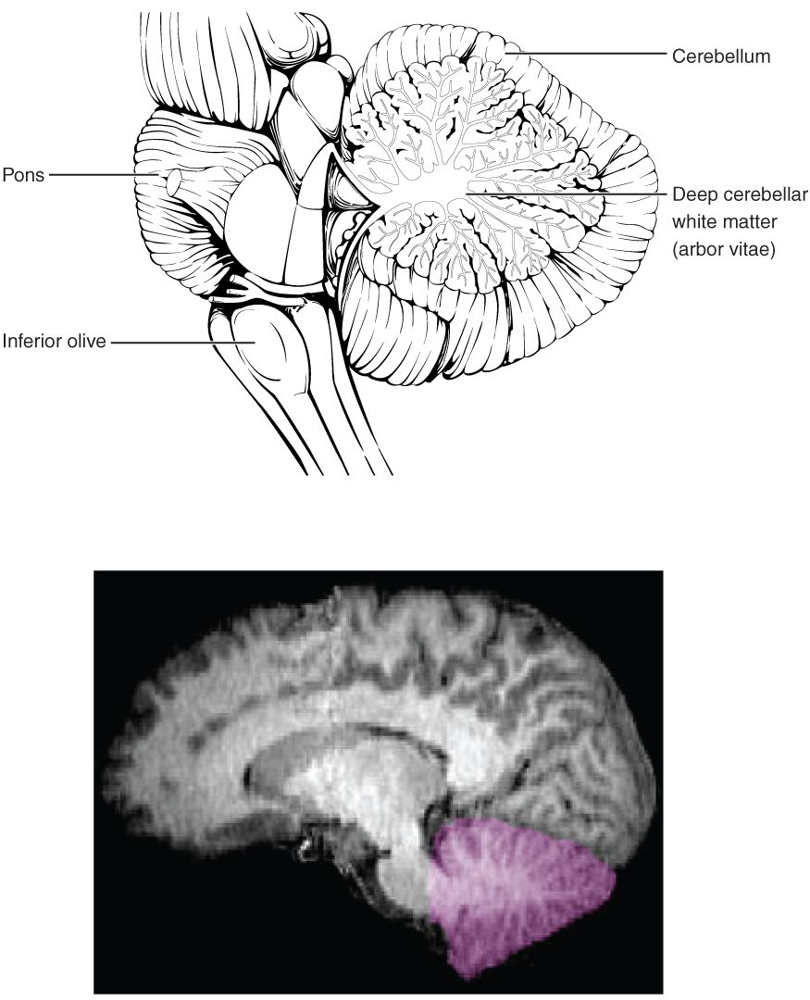
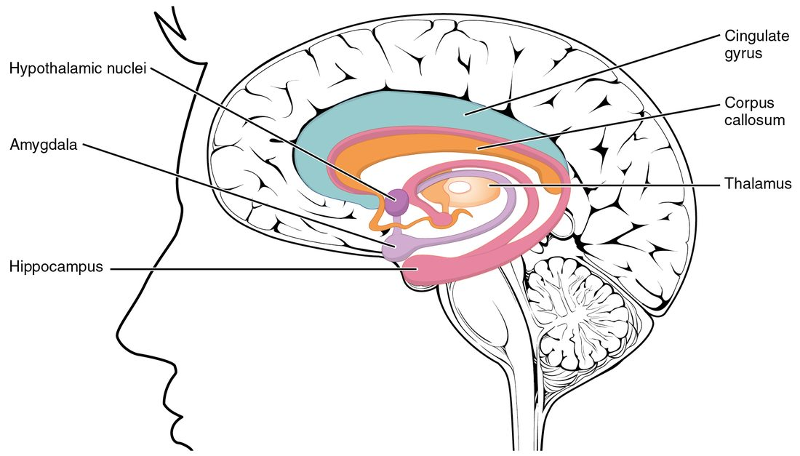

Your brain weighs about 1.4 kg, and every part of it has a job you can name. This page covers the parts of the brain and their functions: how the brain grows from a simple tube in the embryo, the cerebrum and its lobes, the diencephalon with the thalamus and hypothalamus, the brainstem, the cerebellum, and three systems that cut across these regions: the basal nuclei, the limbic system and the reticular formation. The next topics cover what protects the brain, then the spinal cord, then what the cerebral cortex does in detail.
How the brain takes shape
Every region on this page grew from one hollow tube. Seeing how that tube swells and folds explains why the adult brain is arranged the way it is. This is a short version; the topic on embryonic development returns to it in full.
From plate to tube
In the third week of development, a strip of cells along the back of the embryo thickens into the neural plate (neur- = nerve). Its edges rise as two neural folds, with a neural groove between them. The folds meet and fuse over the groove, closing it into the neural tube. This folding process is called neurulation. It is finished by the end of the fourth week.
- The front end of the neural tube becomes the brain. The rest becomes the spinal cord.
- The tube's hollow center stays open. It becomes a connected set of fluid-filled spaces inside the brain and a thin canal inside the spinal cord, which the next topic covers.
- Cells pinched off from the tops of the folds form the neural crest. They migrate through the embryo and differentiate into many cell types, including the neurons of the ganglia outside the CNS and the Schwann cells.
Three swellings, then five
By the fourth week, the front end of the tube has three swellings, the primary brain vesicles (vesicle = little bladder), shown on the left of Figure 1:
- the prosencephalon (pros- = forward, encephal- = brain), or forebrain
- the mesencephalon (mes- = middle), or midbrain
- the rhombencephalon (rhomb- = diamond shape), or hindbrain
By the fifth week, the forebrain and hindbrain have each divided in two, giving five secondary vesicles. Each one becomes a region you will meet below:
| Primary vesicle | Secondary vesicle | Adult region |
|---|---|---|
| Prosencephalon (forebrain) | Telencephalon (tel- = end) | Cerebrum |
| Prosencephalon (forebrain) | Diencephalon (di- = through, or between) | Thalamus, hypothalamus, epithalamus |
| Mesencephalon | Mesencephalon (no split) | Midbrain |
| Rhombencephalon (hindbrain) | Metencephalon (met- = after) | Pons and cerebellum |
| Rhombencephalon (hindbrain) | Myelencephalon (myel- = marrow) | Medulla oblongata |
![Two stages of the embryonic brain. On the left, at three to four weeks, the front end of the neural tube has three swellings, labeled prosencephalon (forebrain), mesencephalon (midbrain) and rhombencephalon (hindbrain), with a side view showing the tube bent. On the right, at five weeks, the forebrain has split into two swellings and the hindbrain into two, making five; arrows show what each becomes: the cerebrum; the thalamus, hypothalamus and epithalamus; the midbrain; the pons and cerebellum; and the medulla oblongata. An eye cup buds from the side of the second swelling.](../figures/os-13-3.jpg)
The telencephalon grows far faster than the rest. It balloons backward and over the diencephalon and midbrain, which is why the adult cerebrum covers most of the other regions.
The cerebrum
Look at a brain from the side (Figure 2) and almost everything you see is cerebrum (Latin for brain). It makes up about 80% of the brain's mass.
- A deep midline groove, the longitudinal fissure (fissura = cleft), divides it into right and left cerebral hemispheres (hemi- = half, sphaira = ball).
- The cerebral cortex (cortex = bark) is the outer layer of gray matter, only 2 to 4 mm thick. It holds the cell bodies, dendrites and synapses of billions of neurons.
- The cortex is folded into ridges, each called a gyrus (plural gyri; gyrus = circle), separated by grooves, each called a sulcus (plural sulci; sulcus = furrow). Folding packs a large sheet into the skull: about two thirds of the cortex lies hidden in the sulci.
- Under the cortex lies white matter: myelinated axons running between cortical areas, between the hemispheres, and up and down to the rest of the CNS.

Two large bands of that white matter have names:
- The corpus callosum (corpus = body, callosum = tough) is the thick band of about 200 million axons at the floor of the longitudinal fissure. It connects matching areas of the two hemispheres, so each side knows what the other is doing.
- The internal capsule is a compact band of axons deep in each hemisphere. Axons running between the cortex and the brainstem and spinal cord funnel through it, so a small injury here can weaken a whole side of the body.
Deep inside each hemisphere, under the white matter, sit clusters of gray matter, the basal nuclei, covered later on this page.
The lobes of the cerebrum
Three large sulci divide each hemisphere into lobes, named after the skull bones over them. Find each one in Figure 3.
- The central sulcus runs from the top of the brain down the side. It separates the frontal lobe in front from the parietal lobe behind.
- The lateral sulcus (also called the lateral fissure) is the deep groove along the side. The temporal lobe lies below it.
- The parieto-occipital sulcus separates the parietal lobe from the occipital lobe. It is clearest on the medial surface.

Each lobe has a set of broad jobs. A later topic maps the exact areas; here is the overview.
| Frontal lobe | Parietal lobe | Temporal lobe | Occipital lobe | Insula | |
|---|---|---|---|---|---|
| Where | Front of each hemisphere, in front of the central sulcus | Top and upper side, behind the central sulcus | Side, below the lateral sulcus | Back of each hemisphere | Deep in the lateral sulcus, hidden by the other lobes |
| Main jobs | Starting voluntary movement; planning, decisions and self-control; producing speech | Body sensations (touch, pressure, temperature, pain, limb position); where things are in space | Hearing; recognizing faces and objects; understanding language; forming memories of events and facts | Vision | Taste; sensing the state of your own body, such as a full stomach or a racing heart |
| Example of damage | Weakness on the opposite side of the body; poor judgment or personality change | Numbness on the opposite side; ignoring one side of space | Trouble understanding speech or learning new facts | Loss of vision in part of what you see | Changed taste or awareness of body signals |
Most of these jobs are crossed. The left hemisphere moves and feels the right side of the body, and the right hemisphere the left side. That is why damage to one side of the brain causes weakness on the contralateral (opposite) side.
The insula (Latin for island) is sometimes called the fifth lobe. Pull the temporal lobe down and you find it, a buried island of cortex at the bottom of the lateral sulcus.
The diencephalon
The diencephalon sits in the center of the brain, between the cerebrum above and the brainstem below, wrapped by the cerebral hemispheres. Cut the brain down the middle (Figure 4) to see it. It has three parts.

Thalamus
The thalamus (Greek for inner chamber) is a pair of egg-shaped masses of gray matter, one on each side of the midline. It is made of many nuclei, and it is the relay and filter for almost everything that reaches the cerebral cortex.
- Sensory signals from the body, eyes and ears synapse in the thalamus before they reach the cortex. Smell is the one sense that reaches the cortex without passing through it first.
- The thalamus does not just pass signals on. It adjusts how strongly each one reaches the cortex, which is part of how you focus on one sound and ignore another.
- It also relays loops from the basal nuclei and the cerebellum back to the motor areas of the cortex.
Hypothalamus
The hypothalamus (hypo- = below) lies below and in front of the thalamus. It is about the size of an almond and weighs only about 4 g, yet it controls more of your internal environment than any other region. Its jobs get their own section below.
Epithalamus
The epithalamus (epi- = upon) is a small region at the back of the diencephalon, above and behind the thalamus. Its best-known part is a small gland that releases a hormone into the blood at night; you will meet it with the endocrine glands.
What the hypothalamus controls
Suppose your body temperature rises during a hot run. Neurons in the hypothalamus sense the warmer blood flowing past them. They compare it with the temperature set point and send signals that widen the blood vessels in your skin and start sweating. Heat leaves, and temperature falls back. The hypothalamus is working as the control center of a negative feedback loop.
It does the same for many regulated variables. Groups of neurons in the hypothalamus, each a nucleus, sense conditions in the blood directly and receive signals from the rest of the nervous system. They then send out commands along three routes:
- Through the autonomic nervous system. The hypothalamus sends axons to the brainstem and spinal cord neurons that run the sympathetic and parasympathetic divisions. This lets it raise or lower heart rate, blood pressure, sweating and gut activity. The fight-or-flight response in fear starts here.
- Through hormones. The hypothalamus sits right above the pituitary gland and controls it.
- Through behavior. It creates drives such as hunger and thirst that make you seek food or water.
What it regulates, in summary:
- Body temperature: sweating, skin blood flow, shivering.
- Water balance: thirst, and a hormone that makes the kidneys keep water.
- Food intake: hunger and the feeling of fullness.
- Autonomic output: heart rate, blood pressure, digestion.
- Daily rhythms: the timing of sleep and waking, set by a small cluster of its neurons that receives light information from the eyes.
- Emotional responses: the body's side of fear, anger and pleasure, working with the limbic system.
- Hormone release through the pituitary gland, including the hormones of growth, stress, the thyroid and reproduction.
The brainstem
The brainstem is the stalk that connects the cerebrum and diencephalon to the spinal cord (Figure 5). From top to bottom it has three parts: the midbrain, the pons and the medulla oblongata. Every signal between the brain and the spinal cord passes through it, and most of the nerves of the head and neck attach to it.

Midbrain
The midbrain is the short top part of the brainstem, just below the diencephalon.
- On its front are the two cerebral peduncles (pedunculus = little foot), thick stalks of white matter that carry motor commands down from the cortex.
- On its back are four small bumps. The upper two, the superior colliculi (colliculus = little hill), turn your eyes and head toward something that suddenly moves into view. The lower two, the inferior colliculi, relay hearing signals and turn you toward a sudden sound.
- Deep inside is the substantia nigra (Latin for black substance), a band of dark neurons that release dopamine into the basal nuclei.
Pons
The pons (Latin for bridge) is the rounded bulge below the midbrain. Most of its bulk is axons crossing from one side to the other to reach the cerebellum, so it acts as a bridge between the cortex and the cerebellum. Nuclei in the pons also help shape the rhythm of breathing.
Medulla oblongata
The medulla oblongata (medulla = marrow, oblongata = lengthened), or just medulla, is the lowest part. It passes through the large hole in the base of the skull, the foramen magnum, and continues as the spinal cord. Its nuclei control functions you cannot live without:
- the rate and force of the heartbeat
- the diameter of blood vessels, and so blood pressure
- the basic rhythm of breathing
- automatic protective actions: swallowing, coughing, sneezing, gagging and vomiting
This is why an injury that crushes the medulla, for example when a swollen brain is pushed down through the foramen magnum, stops breathing and circulation.
The reticular formation
Running through the core of the whole brainstem is a loose net of neurons called the reticular formation (reticulum = little net). Its neurons receive branches of almost every sensory pathway, and they send axons both up and down.
- Upward: the reticular activating system (RAS) sends a steady stream of signals up through the thalamus to the whole cortex. This keeps the cortex awake and alert. Loud noise or pain boosts it, which is why an alarm clock wakes you. Damage to the RAS on both sides, or to the cortex it drives, causes coma.
- Filtering: it damps down repeated, unimportant input, such as the feel of your clothes, so it does not keep reaching awareness.
- Downward: it sends axons to the spinal cord that set background muscle tension and help you keep your posture.
The cerebellum
Behind the brainstem, tucked under the occipital lobes, sits the cerebellum (little brain) (Figure 6). It is only about 10% of the brain's mass but holds more than half of its neurons. Like the cerebrum, it has an outer cortex of gray matter, folded into thin ridges, over a core of white matter that branches like a tree, the arbor vitae (tree of life).

The cerebellum does not start movements. It makes them accurate. Here is how:
- When the motor areas of the cortex send a command to move, a copy goes to the cerebellum through the pons.
- At the same time, the cerebellum receives signals about what the body is actually doing: sensory input from the muscles and joints about limb position, and input from the balance organs in the ear.
- It compares the intended movement with the actual one.
- It sends corrections, through the thalamus to the motor areas of the cortex and through the brainstem, that adjust the force, timing and direction of the movement while it is under way.
With practice the cerebellum's corrections become more accurate, which is part of how a movement becomes smooth and automatic, such as riding a bike.
Damage to the cerebellum causes ataxia (a- = without, tax- = order): clumsy, poorly timed movement. A person with ataxia walks with a wide, staggering walk, overshoots when reaching for a cup, and may slur speech. Muscle strength is normal; the problem is coordination. One side of the cerebellum coordinates the same side of the body, so damage to the left cerebellum makes the left arm clumsy. Alcohol depresses the cerebellum early, which is why roadside sobriety tests ask you to walk a straight line and touch your nose.
The basal nuclei
Deep in each hemisphere lie several masses of gray matter called the basal nuclei (Figure 7). They are nuclei in the strict sense: clusters of neuron cell bodies inside the CNS. Many books still call them the basal ganglia, an older name, even though a ganglion is strictly a cluster outside the CNS. This course uses "basal nuclei".
- The caudate (cauda = tail) nucleus has a large head and a long curving tail.
- The putamen (Latin for shell) lies to the outside of it. The caudate and putamen together form the striatum (striped body), which receives the input to the basal nuclei.
- The globus pallidus (pale globe) lies just inside the putamen and sends the output.
- Two nuclei outside the cerebrum work with them: the subthalamus (subthalamic nucleus), just below the thalamus, and the substantia nigra in the midbrain.

The basal nuclei work in a loop: cortex → striatum → globus pallidus → thalamus → back to the cortex. The globus pallidus constantly inhibits the thalamus, which acts like a brake on movement. When the cortex plans a movement, the striatum briefly releases the brake for that movement only, while keeping it on for competing ones. So the basal nuclei help select which movement starts and suppress the ones you do not want. Dopamine from the substantia nigra makes that release easier.
Two diseases show both sides of the loop:
- In Parkinson's disease, dopamine neurons of the substantia nigra die. The brake stays on too hard. Movements become slow and hard to start, muscles are stiff, and a tremor appears at rest. The next topic explains why dopamine itself cannot be given as a drug.
- In Huntington's disease, an inherited disorder, neurons of the striatum die first. The brake fails, and unwanted, jerky, dance-like movements break through.
The pathways from the basal nuclei and the cerebellum to the muscles come with the motor pathways, later in this chapter.
The limbic system
The limbic system (limbus = border) is a ring of structures at the inner border of the cerebrum, wrapped around the diencephalon (Figure 8). It links emotion, memory and the body's responses to them. Its cortical parts, the cingulate gyrus above the corpus callosum and the gyri along the inner edge of the temporal lobe, are called the limbic lobe.

- The hippocampus (Greek for seahorse, from its shape) curls along the floor of each temporal lobe. It is needed to form new memories of facts and events. Someone who loses both hippocampi can still remember their childhood, but cannot remember a conversation from ten minutes ago.
- The amygdala (Greek for almond) sits just in front of the hippocampus. It judges how emotionally important something is, especially threats. It drives fear and, through the hypothalamus, the racing heart and sweating that go with it. It also makes emotional events easier to remember.
- The cingulate gyrus (cingulum = belt) arches over the corpus callosum and links emotion to attention and decision making.
- The hypothalamus and parts of the thalamus connect all of these and turn emotion into body responses.
Smell pathways feed straight into the limbic system, which is part of why a smell can bring back an emotional memory so strongly.
Putting the regions together
| Cerebrum | Diencephalon | Brainstem | Cerebellum | |
|---|---|---|---|---|
| Embryonic origin | Telencephalon | Diencephalon | Mesencephalon, metencephalon (pons), myelencephalon | Metencephalon |
| Parts | Two hemispheres, cortex, white matter, basal nuclei | Thalamus, hypothalamus, epithalamus | Midbrain, pons, medulla oblongata | Two hemispheres, cortex, arbor vitae |
| Main job | Awareness, voluntary movement, thought, language, memory | Relay to the cortex; homeostasis control | Connecting brain and spinal cord; heart, blood vessels, breathing; alertness | Coordinating and timing movement; balance |
| If damaged | Weakness, numbness or lost abilities on the opposite side | Altered sensation; failure of temperature, water or hormone control | Coma; failure of breathing and circulation | Ataxia on the same side |
Summary
The brain grows from the front of the neural tube: three primary vesicles (prosencephalon, mesencephalon, rhombencephalon) become five secondary vesicles, which become the cerebrum, diencephalon, midbrain, pons and cerebellum, and medulla. The cerebrum has two hemispheres split by the longitudinal fissure and joined by the corpus callosum; its folded cortex of gray matter is divided by the central, lateral and parieto-occipital sulci into frontal, parietal, temporal and occipital lobes, with the insula hidden in the lateral sulcus. The thalamus relays and filters input to the cortex; the hypothalamus controls temperature, water, food intake, autonomic output, daily rhythms and the pituitary gland. The brainstem (midbrain, pons, medulla) links brain and spinal cord and runs the heart, blood vessels and breathing, while the reticular formation in its core keeps the cortex awake. The cerebellum compares intended and actual movement and corrects it; damage causes ataxia. The basal nuclei select wanted movements and suppress others, and the limbic system, with the hippocampus and amygdala, links emotion and memory.